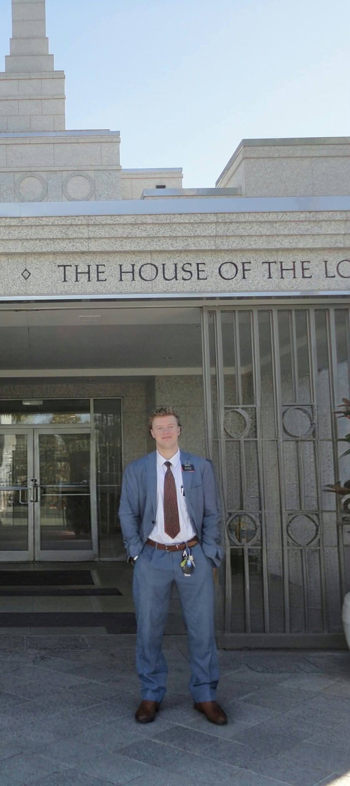

Brisbane Mission

The Australia Brisbane Mission is a mission of The Church of Jesus Christ of Latter-day Saints located in Queensland, Australia. Missionaries serve by teaching people about Jesus Christ and His gospel, sharing the Book of Mormon, helping individuals strengthen their faith, and inviting others to follow Jesus Christ through baptism.
Missionaries in the Brisbane area serve people from different cultures and backgrounds. They work to build meaningful relationships, serve their communities, and help individuals and families find peace, hope, and happiness through the gospel. The mission also provides missionaries with opportunities to develop spiritual strength, discipline, leadership, and love for others. Through daily scripture study, prayer, teaching, and service, missionaries learn to become more like Jesus Christ. The main purpose of the Australia Brisbane Mission is to invite others to come unto Christ by helping them receive His restored gospel and strengthen their relationship with Him.